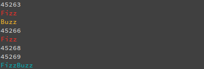
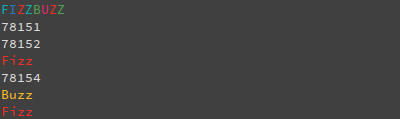

Creando un programa FizzRust...FizzBuzz.
⚠️ LECTURA PROLONGADA ⚠️
Hemos aprendo a las bases para utilizar nuestras herramientas de Rust y creamos nuestro primer "Hola Mundo" en poco tiempo, pero ahora pasemos a crear un programa más interesante, un programa llamado "FizzBuzz".
¿Fizz..que?
FizzBuzz es un juego que se utiliza con los niños para mejorar su capacidad de aplicar una división de manera mental. No, no planeamos tratarte como un niño pues esta prueba también se utiliza en las entrevistas de programación y funciona como un filtro, normalmente se les pide lo siguiente a los candidatos:
"Escriba un programa que imprima los números desde 1 hasta 100. Pero en cada número que sea múltiplo de 3 se deberá imprimir "Fizz" en el lugar del número, el mismo caso para los números que sean múltiplos de 5. Por cada número que sea múltiplo de 3 y 5 se deberá imprimir FizzBuzz"
Por más simple que parezca la prueba, muchos programadores no logran pasarla pues no es un patrón que se vea dentro de las enseñanzas clásicas y por que no es posible representar las pruebas de manera directa y simple sin necesidad de duplicar algo.
Aun así no nos vamos a adentrar en la complejidad de la prueba y explicar los árboles de desiciones en este capítulo sería desviarnos del objetivo principal, existen diferentes formas de resolver un problema FizzBuzz en diferentes lenguajes, aquí puedes ver algunos ejemplos.
Python
def fizzbuzz(x):
"""Simple FizzBuzz, courtesy of @RodolfoFerro on @GitHub"""
if x % 3 == 0 and x % 5 == 0:
return "FizzBuzz"
elif x % 3 == 0:
return "Fizz"
elif x % 5 == 0:
return "Buzz"
else:
return str(x)
if __name__ == '__main__':
sequence = '\n'.join(fizzbuzz(x) for x in range(1, 100))
print(sequence)
C (ANSI + Kernel Coding Style)
#include <stdio.h>
int main(int argc, char *argv[])
{
for (int i = 1; i <= 100; i++) {
if (i % 3 == 0)
printf("Fizz");
if (i % 5 == 0)
printf("Buzz");
if (i % 3 != 0 && i % 5 != 0)
printf("%d", i);
printf("\n");
}
return 0;
}
El problema con este ejemplo es que no se ve un caso para el "FizzBuzz". Nótese que no existe la impresión de una nueva línea en el cuarto printf. Si el número es un múltiplo de 3 y 5 las primeras dos condiciones se cumplen, por lo tanto ambos casos se ejecutan.
Si deseas agregar un ejemplo de FizzBuzz al libro eres bienvenido, solo abre un Pull Request que incluya el programa con tu lenguaje de programación favorito :D
Bien, ahora vamos a tomar la aproximación de Rust. En este proyecto crearemos el mismo programa pero con salida de colores y en el camino explicaremos por encima algunos conceptos base de programación en Rust.
Preparando el proyecto
Utilizando nuestros conocimientos previos lo primero que haremos será crear un nuevo proyecto utilizando Cargo, vamos a llamarlo FizzBuzz.
$ cargo new --bin fizzbuzz
Ahora entremos en el directorio creado por Cargo:
$ cd fizzbuzz
Vamos a editar el archivo Cargo.toml el cual se encuentra por defecto, en
nuestro caso los programadores de Future Lab decidieron dejarlo de esta manera:
[package]
name = "fizzbuzz"
version = "0.1.0"
authors = ["Future Lab <mxfuturelab@futuremail.com>"]
edition = "2018"
[dependencies]
En la parte superior mencionamos que nuestro programa tendría una salida a
terminal de colores, para esto necesitamos agregar un crate a nuestra
sección [dependencies]. La crate que utilizaremos es
colored un paquete de Rust que nos
permite imprimir texto con decoraciones en la terminal.
Nuestro archivo Cargo.toml debería quedar así:
[package]
name = "fizzbuzz"
version = "0.1.0"
authors = ["Future Lab <mxfuturelab@futuremail.com>"]
edition = "2018"
[dependencies]
colored = "1.6"
Bien, tenemos las dependencias que necesitamos para nuestro programa en Rust, digámosle a Cargo que las descargue y las compile para poder utilizarlas en nuestro proyecto sin problema alguno con:
$ cargo build
Esto debería de descargar y compilar colored y dejarlo listo para usar:
Updating crates.io index
Compiling lazy_static v1.2.0
Compiling colored v1.6.1
Compiling fizzbuzz v0.1.0 (/home/futurelab/Escritorio/fizzbuzz)
Finished dev [unoptimized + debuginfo] target(s) in 13.38s
Escribir una base
Utilizando el editor de tu preferencia abre el archivo main.rs, este es el
archivo que vamos a modificar, elimina la línea que contiene el mensaje de
impresión (println!) y procede a escribir el siguiente código, no te
preocupes si no lo entiendes pues lo explicaremos a lo largo de este capítulo.
fn main() { for x in 0..{ match (x % 3, x % 5) { (0, 0) => println!("FizzBuzz"), (0, _) => println!("Fizz"), (_, 0) => println!("Buzz"), (_, _) => println!("{}", x) } } }
No ejecutes este código aún, es una versión de pruebas que modificaremos a lo largo de este y los siguientes capítulos.
Comprendiendo el código
¿Que está pasando aquí? Hay muchos elementos nuevos (Claro, todo es nuevo
a diferencia del macro println! que vimos en el capítulo pasado) por lo que
vamos a volver a descomponer línea por línea todo el programa.
Revisemos dentro de la función main, esta función es la misma que utilizamos
en nuestro primer hola mundo por lo que no hay necesidad de explicarla así
que nos dirigiremos a la segunda línea de nuestro código actual:
for x in 0..{
El iterador
Como mencionamos en el capítulo 2, asumiremos que posees conocimientos
básicos de programación por lo que debe ser evidente que esto es algo
conocido como "ciclo for", los exploraremos más adelante en el capítulo
de control de flujo, por ahora vamos a dejar claras las bases de un
ciclo for en Rust.
Lo primero que podemos observar es que la sintaxis de los ciclos for
no es similar a la utilizada en lenguajes como C, JavaScript o Java:
for (x = 0; x < 10; x++) {
printf("%i\n", x);
}
En su lugar (y en términos más abstractos) los ciclos for en Rust
se ven algo así:
for x in 0..5 {
println!("{}", x);
}
Si abstraemos los términos podríamos describirlos así:
for variable in expresion {
código
}
Siendo "expresion" un iterador. En nuestro ejemplo elegimos el rango de
0..5, esta expresión consta de un inicio y un fin y el ciclo realizará
una iteración entre esos valores, aunque Rust posee rangos inclusivos,
por defecto el límite superior es exclusivo, por lo tanto nuestro ciclo
for imprimirá los valores del 0 al 4, no hasta el número 5.
La razón por la que Rust no posee ciclos for con una sintaxis parecida
a C es sencilla, al tener esa sintaxis se controla manualmente cada
elemento del ciclo lo cual deja el código susceptible a errores humanos.
Pero hay algo diferente en nuestro ciclo for, si volvemos por un momento a nuestro código podemos notar que no tenemos un valor definido como límite superior del ciclo:
for x in 0..{
En su lugar tenemos una llave abierta, indicando el inicio de las
instrucciones del ciclo. Esto es muy sencillo, cuando Rust encuentre
un ciclo for de este tipo lo ejecutará infinitamente.
Nos hemos equivocado a propósito, pues Rust posee una forma más sencilla de realizar ciclos infinitos.
Por ahora continuaremos explorando la estructura del ciclo for:
match (x % 3, x % 5) {
(0, 0) => println!("FizzBuzz"),
(0, _) => println!("Fizz"),
(_, 0) => println!("Buzz"),
(_, _) => println!("{}", x)
Múltiples casos, múltiples resultados.
Aquí podemos ver otro elemento "antes de tiempo" que viene del control
de flujo en Rust, en este caso match.
match es el equivalente a switch en otros lenguajes de programación
como C o C++, una alternativa a comparar y ejecutar los diferentes
valores que puede tomar una variable.
La estructura de la palabra clave match puede ser utilizada de formas
complejas y aunque no explicaremos a fondo su uso por ahora, intentaremos
explicarte como funciona match en el caso de nuestro código.
Para que match funcione correctamente necesita una expresión para
evaluar, como nosotros tenemos x como variable (declarada en el
alcance del ciclo for) y ésta se encuentra en uso como iterador
su valor mutará en cada "vuelta" del ciclo, en este caso x aumentará
su valor en una unidad por iteración por lo que x será lo que
evaluaremos.
Dentro de los paréntesis tenemos dos operaciones que procesarán x y
arrojarán un resultado que será enviado a cualquiera de los posibles
casos dentro de match, en este caso nuestras dos operaciones son las
siguientes: x % 3 y x % 5.
El operador % cumple la misma función que en otros lenguajes, retorna
el residuo de la división entre dos números, sabiendo esto cada
iteración comparará a x dos veces, regresando el residuo del valor de
x dividido entre 3 y 5, dependiendo del resultado se enviará
a la pantalla el mensaje.
Veamos la primera condición:
(0, 0) => println!("FizzBuzz"),
Si el residuo resultante de la división de x/3 Y x/5 es
igual a cero entonces se enviará a la pantalla el mensaje "FizzBuzz".
En la segunda condición las cosas cambian un poco, podemos observar
un elemento nuevo, un guión bajo (_), éste funciona de la misma
manera que un default: funciona dentro de un switch.
En este caso _ funciona como un "atrapa-todo" en el cual caerán
todos los resultados que no coincidan don las condiciones expresadas en
los casos de match. Si observamos detenidamente el código podemos
llegar a la conclusión de que _ funcionará en caso de que
la división de x/3 ó x/5 arrojen cualquier valor diferente de 0
(0, _) => println!("Fizz"),
(_, 0) => println!("Buzz"),
(_, _) => println!("{}", x)
Agregando algo de color
Bien, nuestro programa FizzBuzz funciona, en un ciclo infinito que
se ejecutará hasta que nuestra computadora tenga la necesidad
de detenerlo, más tarde arreglaremos ese problema, por ahora
vamos a darle un poco de color a la salida del programa. Para esto
utilizaremos un crate llamado colored, la misma que agregamos
al inicio de este capítulo, el uso es sencillo, por ejemplo, podemos
imprimir "Hola Rust" en color rojo:
extern crate colored;
use colored::*;
fn main() {
println!("{}", "¡Hola Rust!".red());
}
Eliminamos la opción de ejecución en este ejemplo, pues el navegador no soporta la impresión de texto de color.
Hagamos una ligera modificación, cuando el programa tenga que imprimir "Fizz", lo hará en un color rojo, en caso de que necesite imprimir "Buzz" será en color amarillo y en el caso de imprimir "FizzBuzz" lo hará de color cían.
(No es necesario que pongas esos colores si no son de tu agrado, en la guía oficial del crate están listados todos los colores y estilos disponibles, anímate a experimentar un poco).
Veamos el código utilizando colores de Future Lab :D
extern crate colored;
use colored::*;
fn main() {
for x in 0..{
match (x % 3, x % 5) {
(0, 0) => println!("{}","FizzBuzz".cyan()),
(0, _) => println!("{}","Fizz".red()),
(_, 0) => println!("{}","Buzz".yellow()),
(_, _) => println!("{}", x)
}
}
}
Aun más elementos nuevos, vamos a explicarlos parte por parte:
La declaración extern crate le especifica a Rust que nuestro programa
depende de un biblioteca externa a nuestro proyecto, acercándola a
nuestro alcance.
extern crate colored;
La declaración use crea enlaces locales a funciones o métodos remotos,
se utiliza para simplificar el uso de localización de archivos.
use colored::*;
Las siguientes líneas son sencillas de explicar:
(0, 0) => println!("{}","FizzBuzz".cyan()),
(0, _) => println!("{}","Fizz".red()),
(_, 0) => println!("{}","Buzz".yellow()),
(_, _) => println!("{}", x)
Nuestro macro println! ha cambiado, en este caso el crate colored
solo funciona con cadenas de caracteres, por lo que necesitamos
colocar algo llamado "placeholder" que en resumen es un espacio
donde se colocará un elemento más tarde, tenemos que separar con una
coma los argumentos, en ese caso el segundo argumento será nuestra
cadena, en este caso "Fizz", "Buzz", y "FizzBuzz", solo resta
agregar la función correspondiente. colored retorna cadenas en todas
sus funciones por lo que no habrá problema si pasamos las funciones
seguidas de un punto en este caso.
La impresión del programa debería verse de esta manera en una ejecución normal:

Se ve genial ¿no?, puedes probar a hacer diferentes combinaciones, por ejemplo al imprimir "FizzBuzz" hacer que cada carácter tenga un color distinto:

¡Genial! Nuestro programa ahora imprime las cosas de una manera más "elegante". Pero podemos notar un problema en las imágenes, los números evaluados son muy altos, no deberíamos de cargar al sistema con esa clase de operaciones.
Podríamos colocar un límite superior en el ciclo for en nuestro
código, pero, si bien es una buena solución la verdad sea dicha, tenemos
planeado enseñarte algo que causa muchos problemas con los principiantes
en el lenguaje de programación Rust.
Operaciones de entrada
Entre los usuarios Novel, pedir entrada de datos al usuario es un tema común, pues no existe una manera sencilla de hacerlo como en otros lenguajes como C, Python o Ruby.
Esto tiene una razón sencilla, una entrada errónea del usuario puede causar comportamientos inesperados en los programas que podamos crear, puede parecer algo tedioso al inicio y es algo que se ha estado trabajando desde las versiones mas nuevas de Rust, aun así, las comparaciones entre Rust y otros lenguajes como Python y Ruby, carecen de sentido, pues cumplen roles diferentes.
Vamos a pedir al usuario ingresar un número entero, el cual servirá como límite
superior de nuestro ciclo for, con ello el usuario tendrá el control sobre
las iteraciones de nuestro programa FizzBuzz.
En este caso, si el usuario ingresa cualquier cosa que no sea un número entero se interpretará como un error irrecuperable y el programa se cerrará inmediatamente.
Primero necesitamos importar las bibliotecas necesarias para que el proyecto funcione, tendremos que crear una manera de pedir entrada al usuario y finalmente comprobar que nuestro programa funcione.
El código completo debería verse de la siguiente manera:
extern crate colored;
use colored::*;
use std::io;
fn main() {
let mut entrada = String::new();
println!("Ingrese el número de iteraciones deseadas:");
io::stdin().read_line(&mut entrada).unwrap();
let iter: i32 = entrada.trim().parse().unwrap();
for x in 0..=iter {
match (x % 3, x % 5) {
(0, 0) => println!("{}", "FizzBuzz".cyan()),
(0, _) => println!("{}", "Fizz".red()),
(_, 0) => println!("{}", "Buzz".yellow()),
(_, _) => println!("{}", x),
}
}
}
De nuevo hay muchas cosas nuevas en este código, cosa que nos beneficiará pues los temas posteriores serán mas sencillos de digerir una vez comprendamos como funcionan con este tipo de ejemplos.
Nuestro primer paso es "importar las bibliotecas necesarias".
use std::io;
//-- Mas código
Rust viene preparado con toda clase de cosas en su biblioteca estándar, sin embargo, si tuviésemos que importar cada cosa que utilizamos en nuestro código al final tendríamos un desastre. Al mismo tiempo, importar toneladas de bibliotecas a nuestro programa para dejar un gran porcentaje de éstas sin usar tampoco es algo bueno, por lo que un balance es necesario. Por lo que necesitaremos cargar las funciones de entrada y salida de la biblioteca estándar.
Una vez tengamos las bibliotecas necesarias procederemos a pedir una entrada al usuario:
//-- Recorte
let mut entrada = String::new();
println!("Ingrese el número de iteraciones deseadas:");
io::stdin().read_line(&mut entrada).unwrap();
//-- Recorte
Primero necesitamos un lugar donde almacenar la entrada del usuario:
let mut entrada = String::new();
La declaración de variables se realiza con la palabra reservada
let en Rust, cubriremos eso mas tarde, por ahora todo lo que tienes
que saber es que con esta línea Rust está reservando una variable
mutable (mut) llamada entrada (Si vienes de un lenguaje como Java
podrás notar que es un método similar al de un Scanner, solo que con
el estilo de Rust).
Al igual que en otros lenguajes el operador = se utiliza para realizar
una asignación, en el caso de nuestra línea de código estamos asignando
el valor retornado por una función String::new, en este caso el valor
que regresa la función es una nueva cadena.
Similar a C++, Rust utiliza una sintáxis de 4 puntos para las funciones
asociadas, por eso al llamar ::new() estamos indicándole a Rust que
new es una función asociada que retornará un String.
En resumen la línea:
let mut entrada = String::new();
Crea una nueva variable con una instancia vacía de un String.
Ahora necesitamos indicar a nuestro usuario sus instrucciones, este es un paso importante puesto que tenemos que ser claros, como nuestros usuarios son inteligentes, asumiremos que saben lo que significa iteraciones y procederemos a imprimir un mensaje en la pantalla.
println!("Ingrese el número de iteraciones deseadas:");
Ahora necesitamos hacer algo para que el usuario ingrese el número y
procesarlo para que se almacene en nuestra variable entrada:
io::stdin().read_line(&mut entrada).unwrap();
Como al inicio del programa utilizamos la línea use std::io; ahora
tenemos las funciones y métodos de entrada de texto necesarios para
trabajar, al llamar a la función stdin esta retornará una instancia de
std::io::Stdin, lo que nos permitirá manejar la entrada estándar desde
la terminal.
La siguiente parte del código es .read_line(&mut entrada), con ello
llamamos a la función .read_line y el argumento le indica a la función
que deberá guardar la entrada del usuario en una referencia para usarla
mas tarde.
La última parte es la función .unwrap(), con la cual compararemos la
entrada del resultado. Como indicamos al inicio de este capítulo,
asumiremos que los errores son irrecuperables y unwrap() nos ayudará
con ello, al llamar a ésta función estamos indicándole a Rust lo
siguiente: "Si bien esto puede o no tener un valor, yo afirmo que lo
tiene. En caso contrario, el programa fallará, no quiero un error recuperable".
¡Listo!, con esto podemos pedir al usuario que ingrese "algo", pero no nos basta con que ingrese "algo", necesitamos que el usuario ingrese un número y cerrar el programa si ingresa cualquier cosa que no sea considerada un número:
let iter: i32 = entrada.trim().parse().unwrap();
A estas alturas ya sabemos lo que hace let, solo como recordatorio, estamos
declarando una variable nueva, llamada iter (por iteraciones), pero hay
algo nuevo aquí, específicamente : i32. ¿Qué es esto? Simple, estamos haciendo
algo llamado "tipeado", en este caso estamos indicando que nuestra variable
iter será tratada como un "entero de 32 bits" (No necesitamos entrar a
detalle en esto, pues lo cubriremos en capítulos posteriores), después volvemos
a utilizar el operador de asignación pues necesitamos que nuestra variable
tenga un valor, en este caso la asignación consta de tres partes:
-
trim(): Esta función eliminará el salto de línea que el usuario ingresa al final de la función stdin, sin ésta función no podremos procesar el salto de línea yunwrap()lo detectará como un error. -
parse(): Aquí haremos algo llamado parsing o conversión de tipos. Como podemos recordar, lo que ingresó nuestro usuario hasta ahora es una cadena, así esté conformada por números Rust por el momento piensa que es una cadena de caracteres, con esta función estamos convirtiendo esa cadena al tipo de la variable que se le está asignando, en este caso, convertimos una cadena a un entero de 32 bits. -
unwrap()ya lo hemos cubierto, pero se asegurará de que la conversión resultante devuelva un entero de 32 bits, en caso contrario retornará un error, haciendo que el programa detenga su ejecución.
Bien, ya solo nos falta asignar el número ingresado por el usuario a nuestro
ciclo for para completar nuestro programa.
Si prestaste atención notarás que el ciclo for tiene un pequeño cambio, vamos a verlo:
for x in 0..=iter {
¡Hemos cambiado la estructura de nuestro ciclo! No es nada de que alarmarse, hemos realizado el cambio para tomar ventaja de la edición 2018 de Rust la cual nos permite utilizar ciclos inclusivos, si recordamos las reglas de los ciclos for escritas anteriormente podremos recordar lo siguiente:
"[...] por lo tanto nuestro ciclo
forimprimirá los valores del0al4, no hasta el número5."
Al utilizar la notación ..= el rango será inclusivo por lo que el ciclo
se repetirá el número de veces indicado, con esto evitamos realizar una
operación extra sobre la entrada del usuario.
Una vez realizadas las correcciones ya podemos ejecutar nuestro programa.
¡Genial! Ahora ya sabes como realizar un programa FizzBuzz en Rust, es probable que tengas muchas preguntas en este momento ¿Por qué las variables mutan? ¿Qué es un ciclo? ¿Cuantos tipos de dato existen? ¿Cuales son los principios de Rust?
Bien, esta y tus preguntas las resolveremos en el siguiente capítulo del libro en el cual trataremos conceptos básicos de programación, si deseas el código fuente del programa lo puedes conseguir en el siguiente enlace.